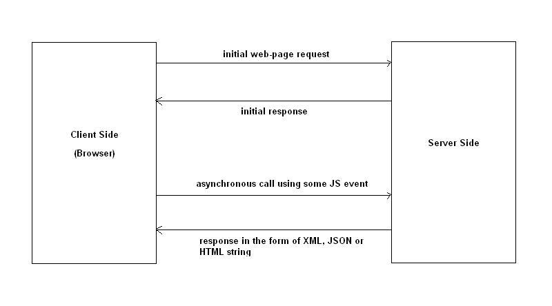

- Explica y elabora un diagrama sobre cómo funciona AJAX con jQuery.
Se utiliza la biblioteca jQuery para realizar llamadas AJAX, el primer parametro es la URL en el que se llamara el segundo plano para poder obtener el contenido del servidor, el segundo esta formado en JSON y permite especificar valores para algunas opciones diferentes a las que son compatibles con el metodo ajax. 
- ¿Qué alternativas a jQuery existen?
Zepto.js, XUI, Sizzle, Qwey
Bibliografias y Referencias:
Citados de forma especificada en instrucciones de Laboratorio
- https://code.tutsplus.com/es/tutorials/how-to-use-ajax-in-php-and-jquery--cms-32494
- http://www.etnassoft.com/2011/03/28/alternativas-a-jquery//